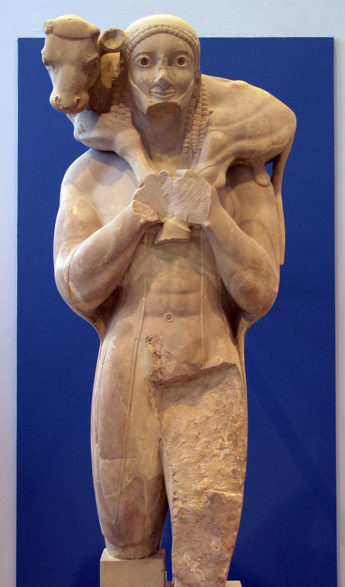
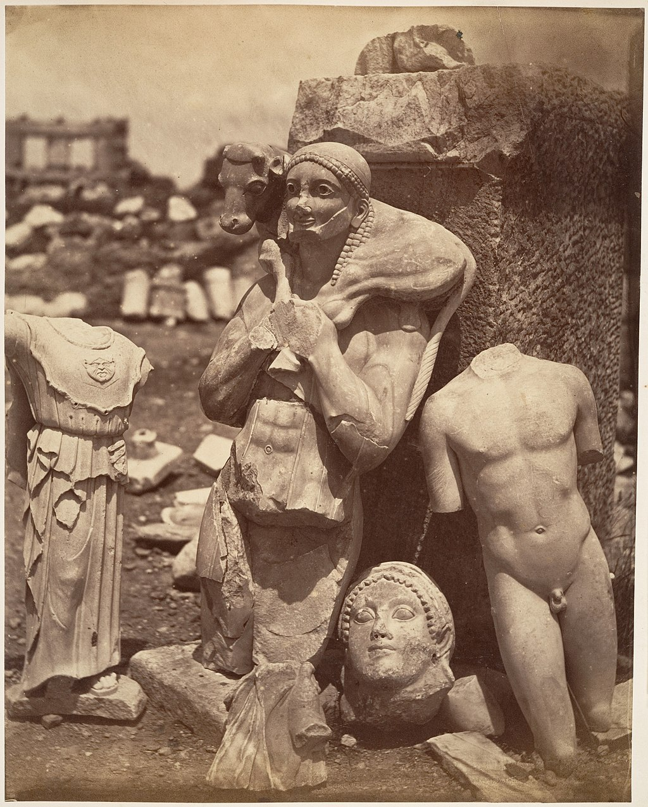

<head>
<meta charset="UTF-8" />
<meta name="keywords" content="drawing, painting" />
<meta name="description" content="drawings by Sunjy" />
<title>Sunjy</title>
<link rel="shortcut icon" type="image/x-icon" href="../../mImages/mCommon/favicon.ico" media="screen" />
<link rel="stylesheet" type="text/css" href="../../mCsses/mCommon/mCssA.css" />
<link rel="stylesheet" type="text/css" href="../../mCsses/mCommon/mCssB.css" />
<link rel="stylesheet" type="text/css" href="../../mCsses/mCommon/mCssC.css" />
<link rel="stylesheet" type="text/css" href="../../mCsses/mCommon/mCssD.css" />
<link rel="stylesheet" type="text/css" href="../../mCsses/mContent/mCssA.css" />
<link rel="stylesheet" type="text/css" href="../../mCsses/mContent/mCssB.css" />
<link rel="stylesheet" type="text/css" href="../../mCsses/mContent/mCssC.css" />
<link rel="stylesheet" type="text/css" href="../../mCsses/mContent/mCssD.css" />
</head>
<script type="text/javascript" src="../../mScripts/mContent/mContentAA.js" /></script>
<script type="text/javascript" src="../../mScripts/mContent/mContentAB.js" /></script>
<script type="text/javascript" src="../../mScripts/mContent/mContentAC.js" /></script>
<script type="text/javascript" src="../../mScripts/mContent/mContentAD.js" /></script>
<script type="text/javascript"></script> 
<script type="text/javascript">
document.write('<div class="mImgAbsolute"></div>');
/*
document.write('<p class="mFontSizeBColor" />From a white paper...</p>');
document.write('<table class="center"><tr><td>');
document.write('');
document.write('</td></tr></table>');
*/
</script>


<script type="text/javascript">
document.write('<p class="mFontSizeBColor" />Moschophoros – The Calf Bearer</p>');
document.write('<p class="mFontSizeSColor" />Moschophoros, which is Greek for the “calf-bearer,” is an ancient Greek statue from 560 BC. He stands with his left foot a little forward and has a thick beard, a symbol of adulthood.<br><br>The body structure is well built, depicting strength and power. He wears a thin cloak, but the sculpture’s nudity is an essential aspect of the art as it adhered to the artistic conventions of the era. The cloak, on the other hand, depicts him as a respectable citizen.<br><br>The calf’s legs are held firmly, making a bold X-shaped composition. This interaction between the calf and the calf-bearer represents a genuine bond between the two. The crossed legs of the calf with the arms of the bearer create unity between them.<br><br>His mouth is very diligently carved and outlined. The man is smiling, which is a unique and new feature in the art from statues.<br><br>His hair is curly, encircling his forehead. There are three plaits on each side, falling over his chest. The hair at the top is tied with a narrow ribbon.<br><br>He has a thick beard that curves around his shaved upper and lower lip. The eyes are large and were made out of colored stones.<br><br>The forms of the face sculpture are simple such as the round face, eyes, and mouth are created with simple arcs.<br><br>Perserschutt – “Persian Rubble”<br><br>The Calf Bearer – Moschophoros was excavated in fragments in the Perserschutt in the Acropolis of Athens in 1864.<br><br>The Perserschutt is a German term meaning “Persian rubble,” and it refers to the bulk of architectural and votive sculptures that was damaged by the invading Persian army of Xerxes I on the Acropolis of Athens.<br><br>The Destruction of Athens occurred during the Second Persian invasion of Greece in 480 BC.<br><br>The Athenians had fled the city, returning only upon the departure of the Persians. Athens had been sacked and burned, and most of the temples had been looted and vandalized.<br><br>The desecrated items were buried ceremoniously by the Athenians. The Athenians then rebuilt their temples and created new sculptures for their new temples.<br><br>The damaged remains were preserved by the burial and were first excavated in 1863. The discoveries include the famous Calf Bearer.<br><br>The inscription on the sculpture’s plinth claims that this statue was dedicated by someone named Rhombos to Athena, the goddess of wisdom.<br><br>This suggests that the sponsor was a prominent citizen who offered his likeness to Athena. He has a calf on his shoulders, which represents the sacrificial offering he is presenting to the goddess.<br></p>');
document.write('<table class="center" /><tr><td>');
document.write('<br>The body structure is well built, depicting strength and power. He wears a thin cloak, but the sculpture’s nudity is an essential aspect of the art as it adhered to the artistic conventions of the era. The cloak, on the other hand, depicts him as a respectable citizen.<br><br>The calf’s legs are held firmly, making a bold X-shaped composition. This interaction between the calf and the calf-bearer represents a genuine bond between the two. The crossed legs of the calf with the arms of the bearer create unity between them.<br><br>His mouth is very diligently carved and outlined. The man is smiling, which is a unique and new feature in the art from statues.<br><br>His hair is curly, encircling his forehead. There are three plaits on each side, falling over his chest. The hair at the top is tied with a narrow ribbon.<br><br>He has a thick beard that curves around his shaved upper and lower lip. The eyes are large and were made out of colored stones.<br><br>The forms of the face sculpture are simple such as the round face, eyes, and mouth are created with simple arcs.<br><br>Perserschutt – “Persian Rubble”<br><br>The Calf Bearer – Moschophoros was excavated in fragments in the Perserschutt in the Acropolis of Athens in 1864.<br><br>The Perserschutt is a German term meaning “Persian rubble,” and it refers to the bulk of architectural and votive sculptures that was damaged by the invading Persian army of Xerxes I on the Acropolis of Athens.<br><br>The Destruction of Athens occurred during the Second Persian invasion of Greece in 480 BC.<br><br>The Athenians had fled the city, returning only upon the departure of the Persians. Athens had been sacked and burned, and most of the temples had been looted and vandalized.<br><br>The desecrated items were buried ceremoniously by the Athenians. The Athenians then rebuilt their temples and created new sculptures for their new temples.<br><br>The damaged remains were preserved by the burial and were first excavated in 1863. The discoveries include the famous Calf Bearer.<br><br>The inscription on the sculpture’s plinth claims that this statue was dedicated by someone named Rhombos to Athena, the goddess of wisdom.<br><br>This suggests that the sponsor was a prominent citizen who offered his likeness to Athena. He has a calf on his shoulders, which represents the sacrificial offering he is presenting to the goddess.<br>" />');
document.write('</td></tr></table>');
document.write('<p class="mFontSizeBColor" />“Persian rubble” where remains of Archaic statues were found</p>');
document.write('<p class="mFontSizeSColor" />The Perserschutt photographed in 1866, just after excavation. The Calf-bearer appears in the center.</p>');
document.write('<table class="center" /><tr><td>');
document.write('');
document.write('</td></tr></table>');
</script>


